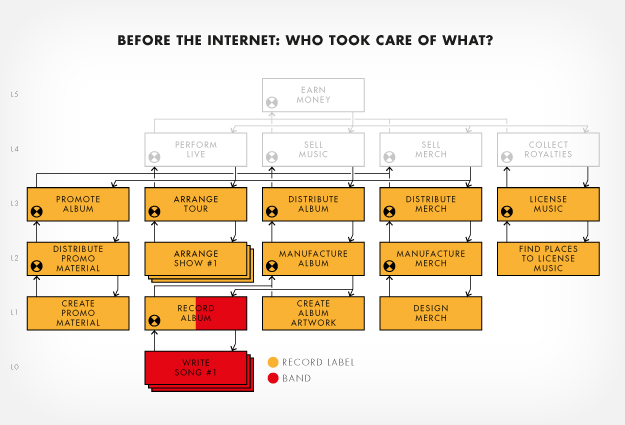
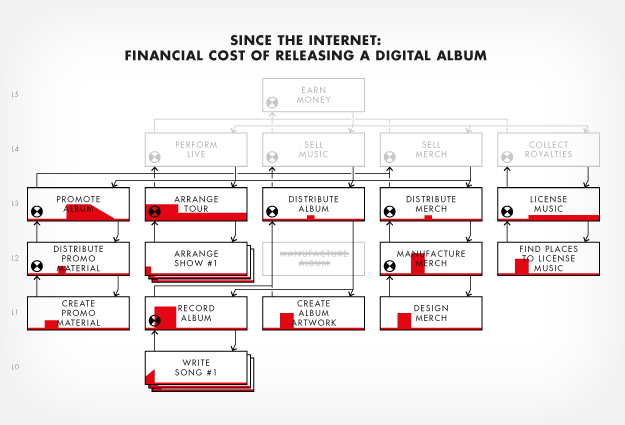
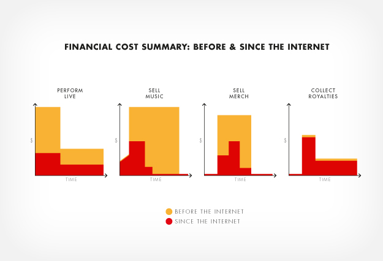
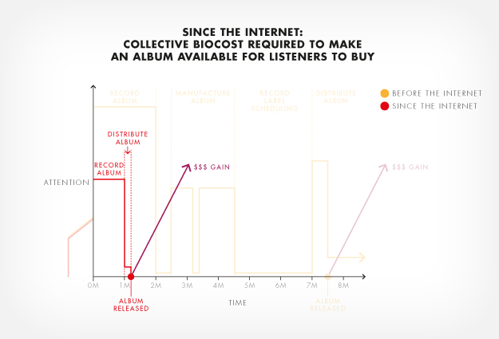
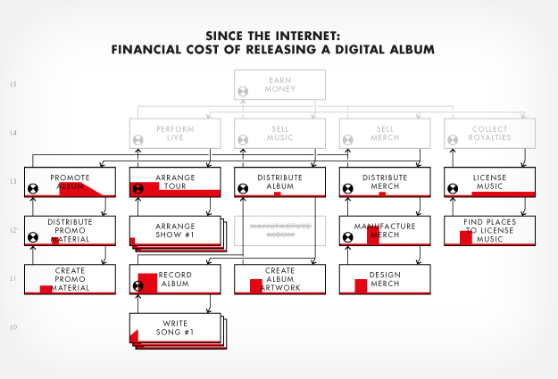
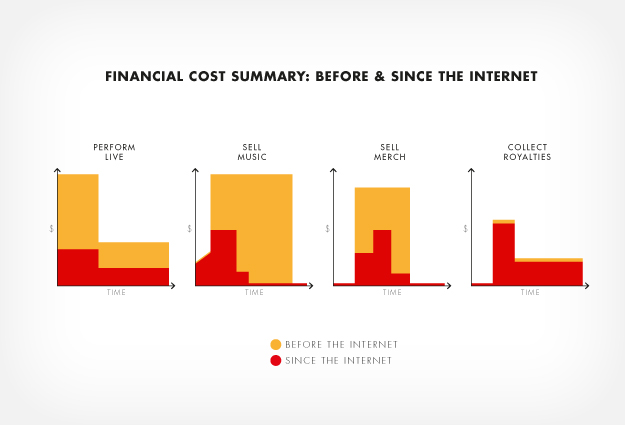
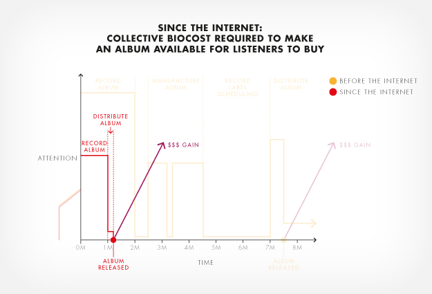

MFA IXD
Sustaining
A Band
A collection of cybernetic models highlighting the evolution of the music industry.
Techniques including Bio-cost and Goals & Means were employed to articulate how artists are less reliant on record labels since the Internet.
The project focused on four channels of artist income and how technology has impacted them. My design intervention was directed toward music licensing and royalty collection.
Download the full set of models as a PDF
This was an individual project for Paul Pangaro‘s Introduction to Cybernetics and the Foundations of Systems Design Class.
Thumbnail photo credit: Katie Gregory